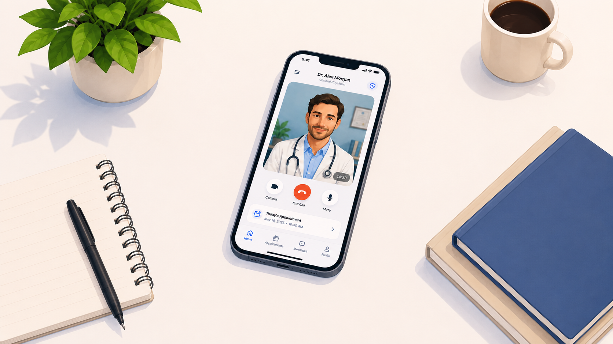

I'm a Computer Science student at UMass Lowell, from the Lowell area. Right now I'm taking GUI Programming I over the summer to learn web development. Most of my CS classes so far have been stuff like machine learning and generative AI, so this is pretty different from what I'm used to. Outside of school I spend a lot of my time trying to build businesses. I'm currently working on a telemedicine startup which has been keeping me busy on top of classes. I got into CS because I like figuring out how things work behind the scenes, and I think there's a lot you can do with it beyond just coding.
Honestly most of my free time goes into the businesses I'm working on, but when I'm not doing that I like to get outside. I go hiking when the weather is good and I'll play pickup basketball at the gym sometimes. I also listen to a lot of music on Spotify. I'm always looking for new stuff to listen to. Other than that I'll watch a movie or just hang out with friends when I get the chance.
| Category | Favorite |
|---|---|
| Sport | Basketball |
| Movie | Interstellar |
| Food | Authentic Italian pizza |
| Music | Drake |
| App | Spotify |
I'm not just a student. I also like building things on the side. I have some experience with e-commerce and have been getting more into AI lately, which ties in with my CS coursework. The biggest thing I'm working on right now is a telemedicine business focused on making GLP-1s and weight loss medication more accessible for everyday people. A lot of these treatments are expensive or hard to get so the idea is to make the whole process easier through telehealth. It's a lot of work to balance with school but I like staying busy and I'd rather be building something than sitting around.

Some sites I use a lot: